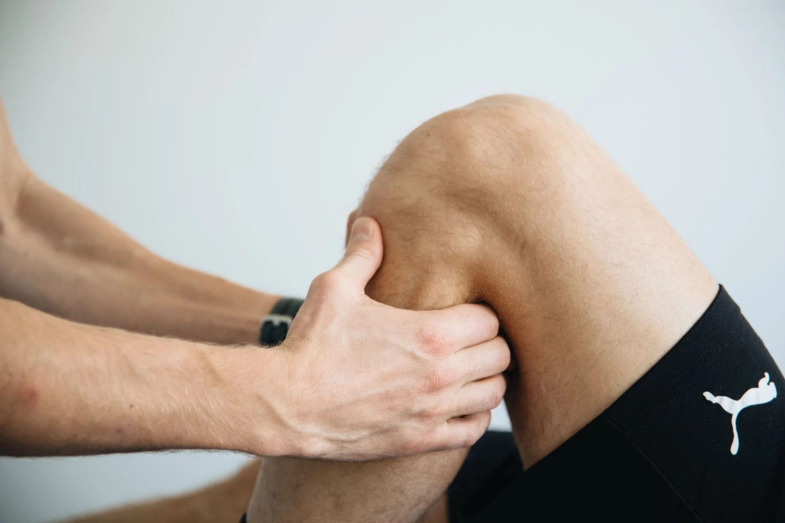

Imagem ilustrativa · não retrata o local ou a equipe01 / Fisioterapia e acupuntura · Monte Aprazível
Fisioterapia e acupuntura no mesmo cuidado.
Cristiane Siqueira. Acupuntura e Fisioterapia Cristiane Siqueira, em Monte Aprazível. Duas áreas de cuidado reunidas em um só atendimento, com o seu nome na porta.
- Fisioterapia
- Acupuntura
- Monte Aprazível
 Imagem ilustrativa · não retrata o local ou a equipe
Imagem ilustrativa · não retrata o local ou a equipe02 / Conheça a proposta
Atendimento em Monte Aprazível.
Fisioterapia
Atendimento fisioterapêutico com a Cristiane Siqueira. A conduta é definida após avaliação individual.
Acupuntura
Técnica que o próprio nome do consultório destaca ao lado da fisioterapia. Indicações e cuidados são explicados na avaliação.
Primeiro contato
Conte pelo WhatsApp o que você sente e pergunte como funciona o atendimento.
 Imagem ilustrativa · não retrata o local ou a equipe
Imagem ilustrativa · não retrata o local ou a equipe03 / Trajetória & cuidado
Duas abordagens, uma profissional.
O consultório leva o nome da profissional e já diz o que oferece: acupuntura e fisioterapia. Reunir as duas abordagens no mesmo atendimento é a proposta que o Google apresenta para o consultório da Cristiane Siqueira, no Centro de Monte Aprazível. Formação, técnicas e horários são informados diretamente no atendimento.
- Acupuntura e fisioterapia no mesmo consultório
- Atendimento no Centro de Monte Aprazível
- Nota 5,0 nas avaliações do Google
 Imagem ilustrativa · não retrata o local ou a equipe
Imagem ilustrativa · não retrata o local ou a equipe04 / Seu próximo passo
Vamos conversar?
Consulte horários, disponibilidade e condições pelo WhatsApp.
Fisioterapia e acupuntura · Monte Aprazível